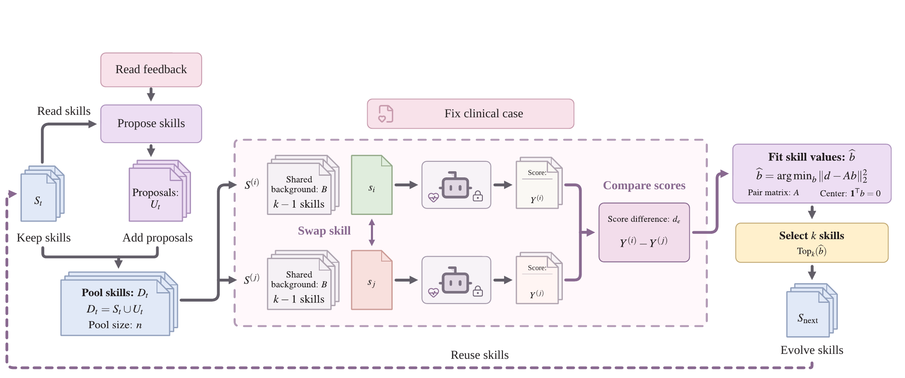

GenAI for Health Workshop
CausalEvo
Causal Skill Self Evolution
for Health LLM Agents
The University of Texas Health Science Center at Houston
Which rules should an agent keep from experience? CausalEvo compares deliberate skill replacements on the same feedback cases, then uses the evidence to retain or replace reusable rules.
Method
Propose compare and retain
A frozen model learns through its instructions. Model weights, feedback cases, and rule count stay fixed during each paired comparison.

- 1
Keep options open
Pool four incumbent rules with two new proposals. The current skill remains a feasible choice.
- 2
Change one rule
Compare six pairs of four-rule skills. Each pair shares three rules and uses the same feedback case.
- 3
Select from evidence
Fit relative rule values by least squares. Retain the top four, favoring incumbent rules on exact ties.
Results
Health calculation results
We compared all methods on 120 test cases across six MedCalc-Bench-Verified tasks.
Evaluation accuracy
Final frozen skill states
Training token use
55.6% fewer tokens in the recorded configurations
See the paper for protocols, task-level results, and uncertainty estimates
Code
Start with the core
The exchange controller, exact cycle fit, and skill-selection logic are available in Python. A small synthetic demo runs with the standard library.
git clone https://github.com/txbrook/CausalEvo.git
cd CausalEvo
python3 demo.pyCitation
@misc{zhang2026causalevo,
title={CausalEvo: Causal Skill Self-Evolution
for Health LLM Agents},
author={Yuchen Zhang},
year={2026},
eprint={2610.21016},
archivePrefix={arXiv},
url={https://arxiv.org/abs/2610.21016}
}